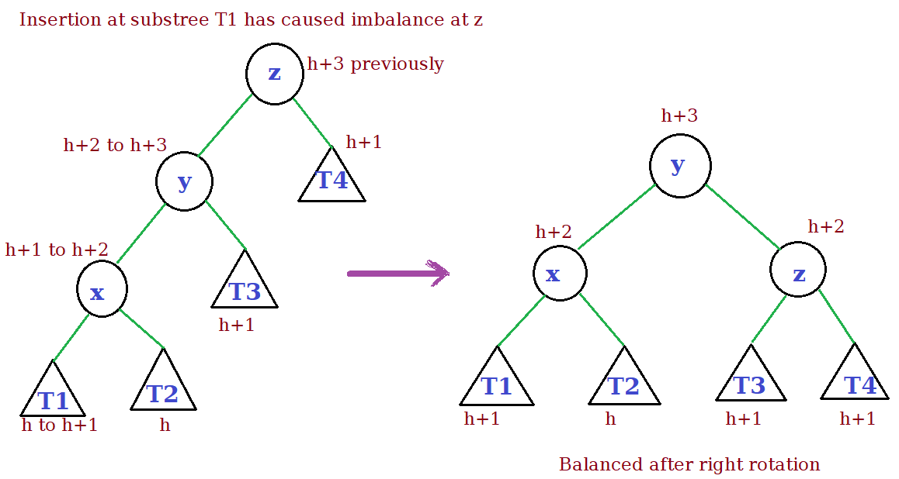
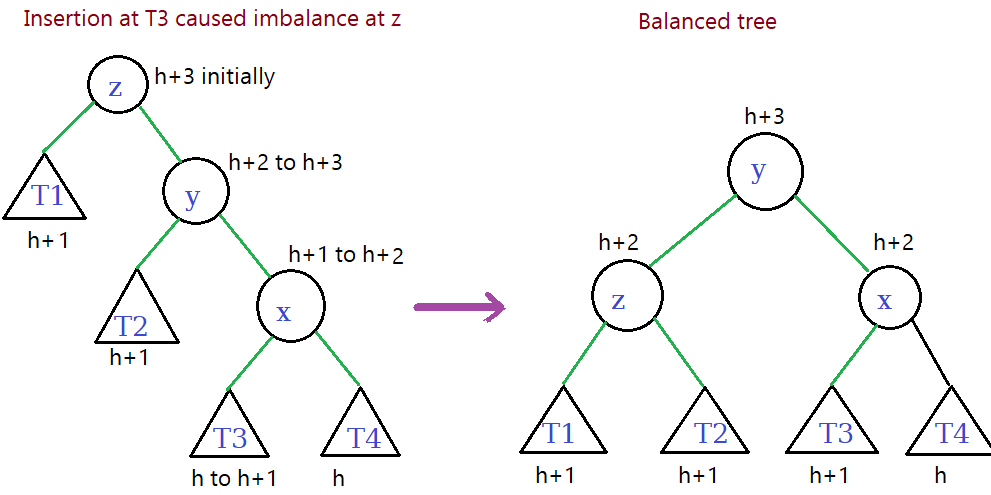
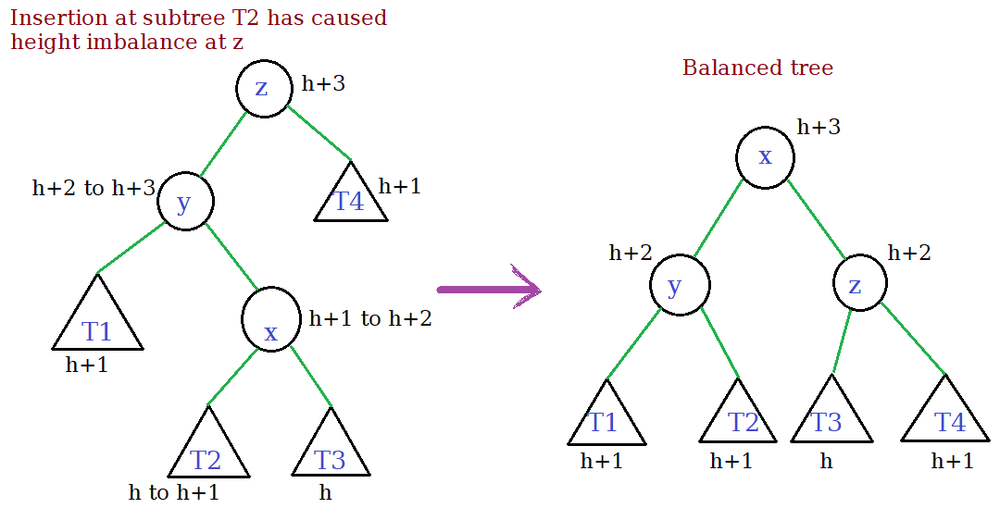
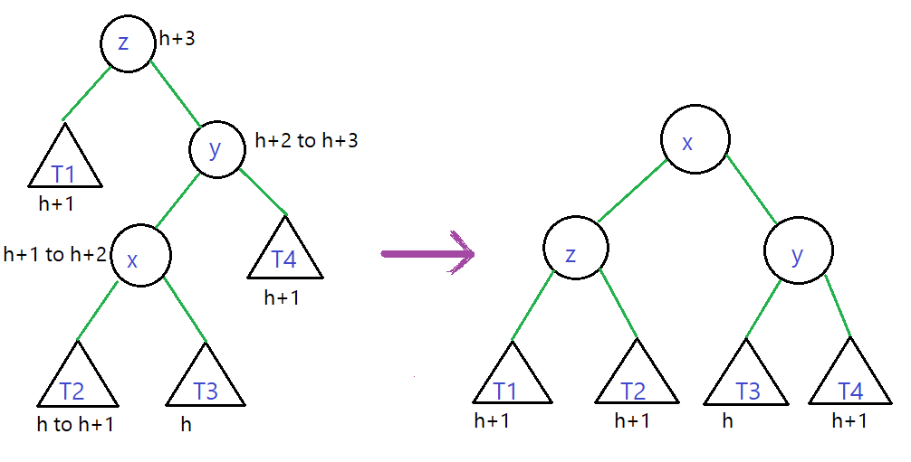
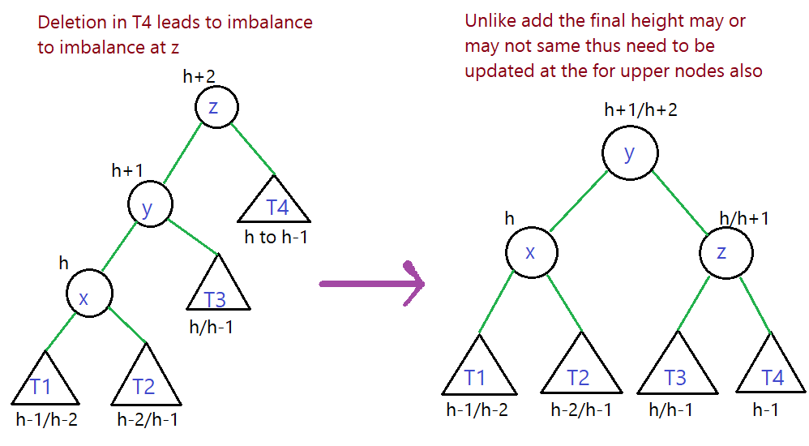
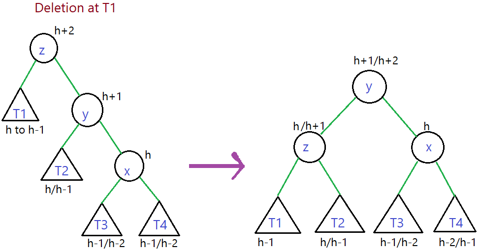
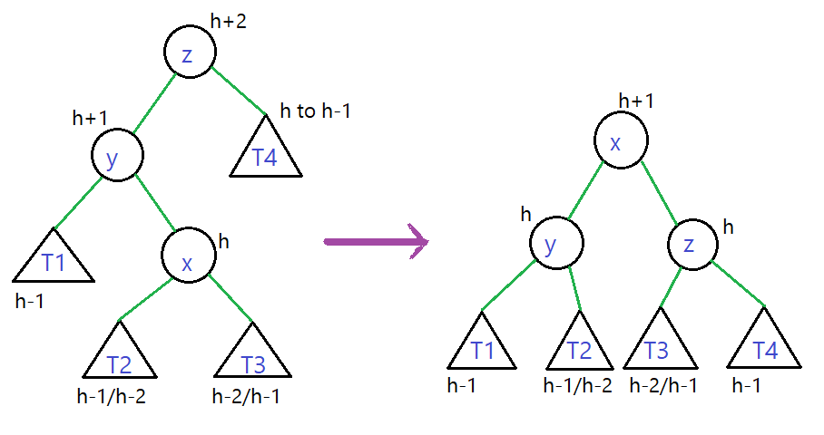
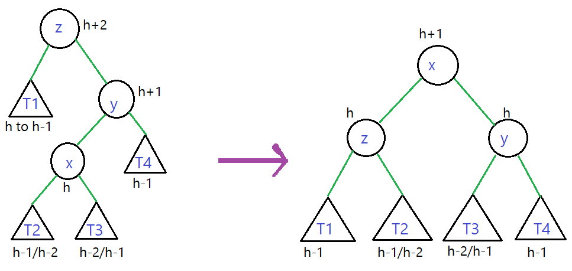

This tutorial requires the knowledge of binary search tree.
We recommend to go through it before proceeding.
- AVL Tree (Adelson, Velski & Landis tree) is a binary search tree
with a height attribute in each node of the tree.
-
The height of a node is calculated as,
height(node) = max(height(node.left), height(node.right)) + 1.
If the node has no child then conventionally it is assigned a height of 0.
-
For an AVL tree at any node the difference between the heights of left and right child is at most 1.
- By the above constraint the depth (max distance to the leaf from root) is O(log2n).
Functions
-
add(Data)
- Similar to binary tree traverse the tree untill null ponter is reached.
- Make a new node with Data update the height of all the nodes int the from leaf to root.
- While updating check at each node the height balance property
(difference of heights of children is greater than 1)
- If such a node is encountered we need to perform rearrangement of nodes there.
-
There can be four cases of rearrangement as follows:
z - The node of height of imbalance.
y - child of z with greater height.
x - child of y with greater height.
-
Right rotation

-
Left rotation

-
Double rotation (left, right)

-
Double rotation (right, left)

- Increment the size of the tree.
-
Find(Data)
Returns the node object which has same data as the parameter.
null is it does not exist.
- Compare the data with the current node data, if data is smaller move left, else move right.
- Once we find a node data equal to Data return that node.
- If a null pointer is reached, then the Data does not exist return null.
-
remove(Data)
Removes the first occurence (closest to the root) of the data, returns boolean.
- Find the node containing Data.
- There can be four cases for the node.
- Node with one child towars left
Then, replace the Data node with the child at left.
- Node with one child towars right
Then, replace the Data node with the child at right.
- Node with no child
Then, just make the node null.
- Node with both children
Then, replace the data attribute with that of the successor (data just great than current node)
or predecessor. Delete the successor or predecessor node.
-
After deletion the height of nodes in the path (current node to root) will have to be updated.
-
This may lead to a height imbalance, we will have to perform rotation at the imbalanced node.
- There can be four cases as follows:
z - The node of height of imbalance.
y - child of z with greater height.
x - child of y with greater height.
-
Right rotation

-
Left rotation

-
Double rotation (left, right)

-
Double rotation (right, left)

- We might have to do rotation at multiple nodes in the path.
- Decrement the size attribute of the tree, return true.
- If the Data does not exist then return false.
Example
Equal data are usually not allowed but in
this example we have put it towards the right child (can be either side).
AVL tree code